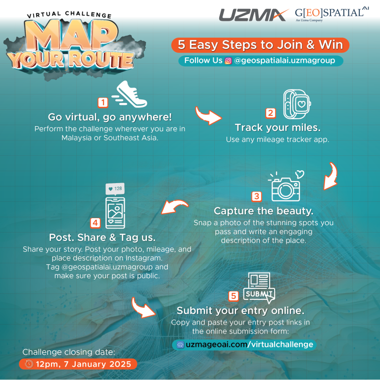
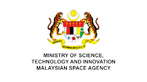

A Historic Milestone with the successful
Launch of UzmaSAT-1
Malaysia’s first commercial very high-resolution Earth Observation (“EO”) satellite, was deployed in low earth orbit via SpaceX’s Falcon 9 Transporter 12 at exactly 4.06am on 15 January 2025, 57 minutes 35 seconds after launching from Vandenberg Space Force Base, California, US on 15 January 2025, 3.09am GMT +8.
See Better.
See the Unseen.
See The Bigger Picture from the Space
Access the best data from space to see better, see the bigger picture, see the unseen.
Unlock the insights that drive innovation and empower better decision-making with Uzma Digital Earth.
UzmaSAT-1 Details Watch Our Short Film



Join Our Virtual Challenge - Map Your Route & Stand A Chance to Win Exciting Prizes!
Take part in this exciting challenge and let’s make local tourism shine!
Register & Submit NowSee Better.
See the Unseen.
See The Bigger Picture from the Space
Access the best data from space to see better, see the bigger picture, see the unseen.
Unlock the insights that drive innovation and empower better decision-making with Uzma Digital Earth.
UzmaSAT-1.
Game Changer
Click here to watch our short film.
OUR INDUSTRY SOLUTIONS
Our solutions empower industries with advanced data from space, providing unmatched clarity, precision, and insights. From urban planning to environmental monitoring, we offer innovative tools that help you make smarter, data-driven decisions.
PRECISION
AGRICULTURE
Get precise insights into soil and crop health to optimize agricultural productivity and food security. Learn more Plantation
Management
Automate land use classification and ensure sustainable agri-commodities production processes. Learn more GROUND
MOVEMENT
Utilize satellite data to monitor GHG emissions, deforestation, and natural disaster risks effectively. Learn more INFRASTRUCTURE
MONITORING
Delivers real-time progress updates for infrastructure projects through high- frequency satellite imagery. Learn more Explore Our Advanced Solutions OUR SERVICES
High-Value Services Across Industries
Discover our comprehensive geospatial services that empower you to visualize and analyze data, enabling informed decision-making across various applications.
High Resolution
Satellite Imagery
High-resolution satellite imagery for clear, detailed Earth monitoring and geospatial analysis across applications. Read More Mapping &
Analytics
Unlock the full potential of your geospatial data with Geospatial AI's advanced platform development services. Read More AI Platform
Development
Leverage AI for breakthrough insights with comprehensive mapping, visualisation, and analysis solutions. Read More Training &
Consultation
Empower your team with the skills and knowledge to comprehensively harness the power of geospatial technology. Read More Book Your Date OUR PARTNERS
Our partners enable us to deliver innovative solutions powered by advanced geospatial analytics and satellite technology.
